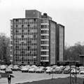

|  |
Champagnat Hall Close
Built in 1865
Office of the current College President |
Champagnat, Marist's tallest building, was constructed in 1964 with a loan from the New York State Dormitory Authority. This nine-story building houses over 400 freshmen students and is connected to the Student Center by means of a breezeway.
The building served two purposes when it was first built. It was not only a place where students could reside, but it became a student union as well. Together, these two facilities became known as Champagnat Hall. The goal of Champagnat was to bring students together to form new relationships and rekindle the spirit of the student body, taking Marist from a class-centered environment to a school-centered community.
The complex boasted a fireplace lounge where students could hang out and relax. It also had a periodical library, study room, and lecture hall. The most impressive addition was the auditorium, which could serve as a lecture hall and provide a venue for the performing arts. It was an intimate theatre with a seating capacity of 358 persons and was the most well equipped theater between New York City and Albany.
In the basement of the three-story student union lived Rathskeller, an on-campus bar and popular hangout for those legally able to drink, as well as a snack bar and party room. The ground floor contained the cafeteria with panoramic views of the Hudson River. A card room, T.V. lounge, game room, and photo lab were also located there.
Eventually Champagnat and the student union became two separate identities. Champagnat would remain a dorm and the student lounges and campus services would now be housed in a Campus Center, later known as the Student Center.
Champagnat is named after the French priest, Marcellin Champagnat, who founded the Marist Brothers in 1817. According to history, Champagnat encountered a dying boy on a mountainside who did not know of the existence of God. Haunted by the thought, this chance encounter motivated him to assume the responsibility of educating the young who would become the future leaders of the Church.